Gravity FAB

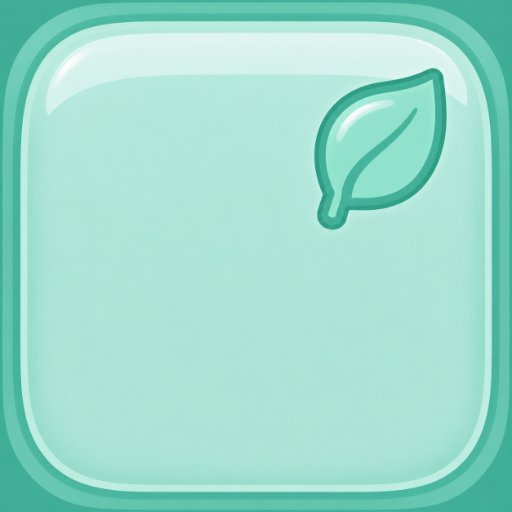
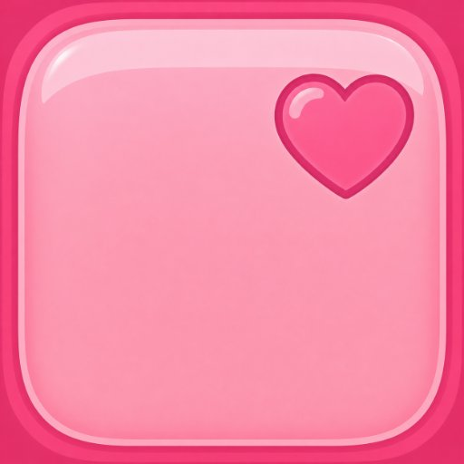
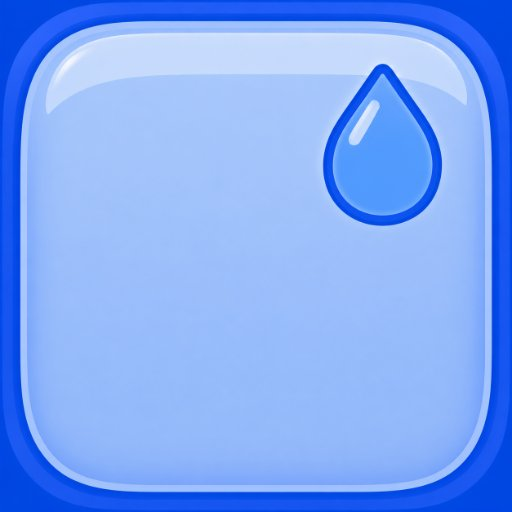
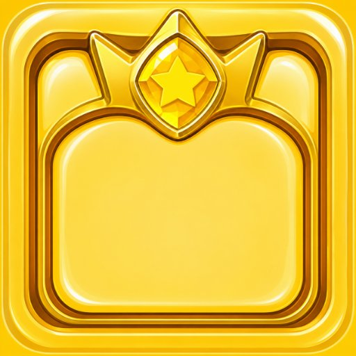
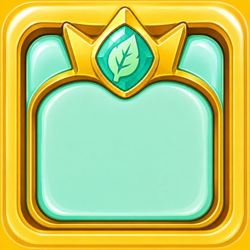
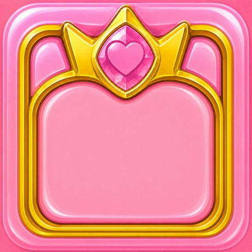
Thạch Hoàng Gia (cấp 1) nay dùng art khung hoàng gia PNG (ui/hoanggia-*.png). Bản PNG cấp 1 cũ (blocks/super-*-1.png) đã gỡ bỏ.
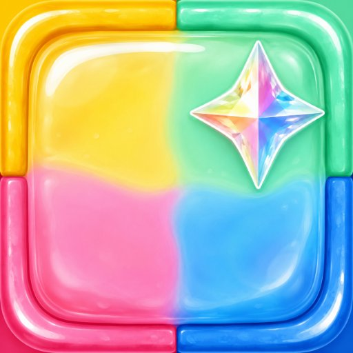
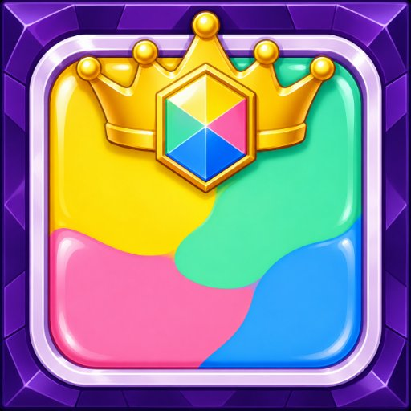
Thạch Cầu Vồng — PNG full-bleed 4 màu + ngọc kim cương 4 cánh. Hoàng Đế Cầu Vồng — PNG full-bleed khung tím đính đá quý + mão vàng, ngọc lục giác cầu vồng. Cả hai bo góc ~20%. Thay bản rainbow.svg / rainbow-2.svg cũ.
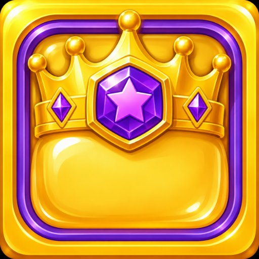
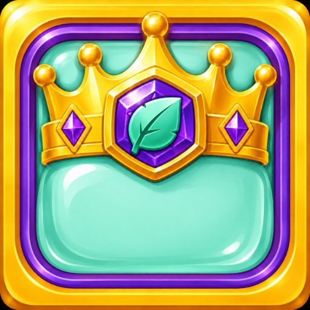
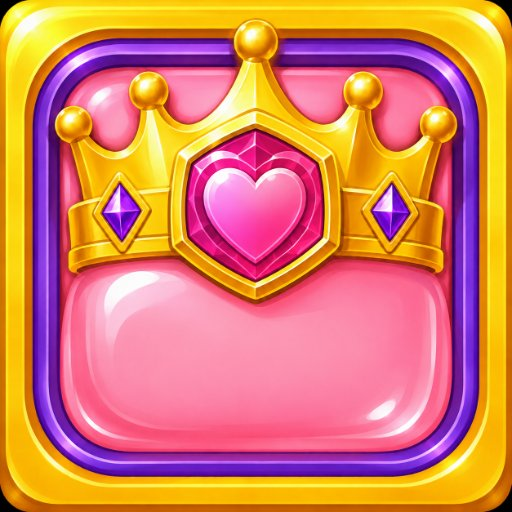
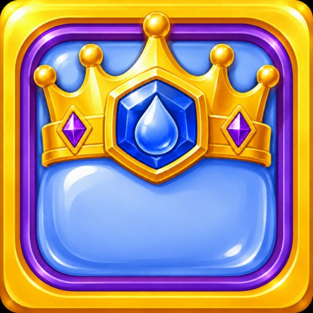
Thiết kế Vua Thạch (Jelly King) mới — khung jelly bo góc đội vương miện vàng, giữa gắn ngọc emblem theo màu (sao / lá / tim / giọt nước). PNG đã cắt nền trong suốt, dùng cho popup cẩm nang, màn tiến hoá và thưởng. Thay cho bản vẽ cấp 2 (super-*-2.svg) cũ.
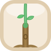
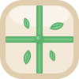
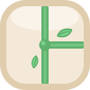
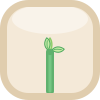
Một dây leo là chuỗi tile: gốc thân (khối đầu tiên — thân gỗ có rễ, chồi non nhú lên) → các tile nối giữa (thẳng đứng · thẳng ngang · góc vuông bo cong · chữ L · dấu X 4 hướng · chữ T 3 cạnh phải/trái) → ngọn (khối cuối — dây chỉ dài nửa ô, kết bằng mầm cây non). Dây mọc từ cạnh vào tâm, đầu dây bo tròn nên nối liền ô kề; xoay/lật để phủ mọi hướng.
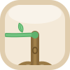
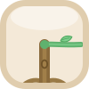
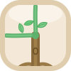
Gốc thân luôn cắm rễ ở cạnh dưới; chồi non mọc ra theo hướng dây sẽ phát triển. 7 phương án chồi = mọi tổ hợp của trên / trái / phải: chọn đúng biến thể để hiển thị gốc khi dây bắt đầu lan sang ô kề.
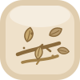
Khi một đoạn dây leo bị cắt, ô chuyển sang bị cắt: dây héo rũ, đầu cắt tơ nâu, kèm huy hiệu đếm ngược (vàng cảnh báo, còn 1 lượt). Hết lượt nó biến thành rác — block-debris: lá khô cuộn + củi khô nâu trên nền ô chìm, cần dọn thêm.
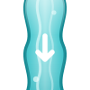
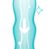
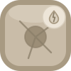
Bộ ô cho cơ chế nguồn nước mọc dần. block-water-source — nguồn ACTIVE (miệng suối + badge giọt nước = có thể bị phá), mũi tên theo hướng trọng lực ↓; mỗi lượt sinh thêm 1 ô block-water-flow nối tiếp, ô vừa mọc dùng block-water-flow-new (viền sáng + lấp lánh). Jelly đứng trên ô dòng chảy bị đẩy 1 ô theo dòng. Phá nguồn → chuyển block-water-source-broken và cả dải chảy tắt. Xem sheet cơ chế W3 · Dòng chảy nối liền.


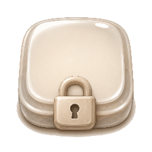
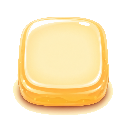
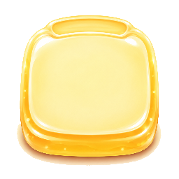
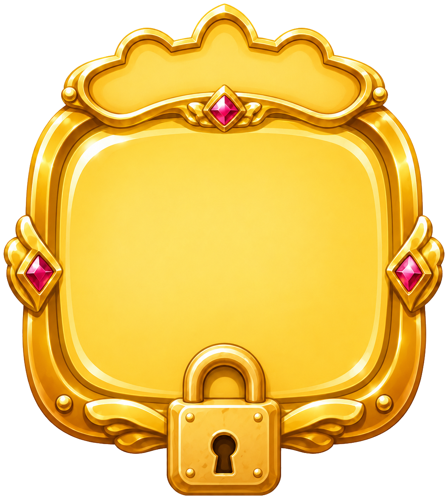
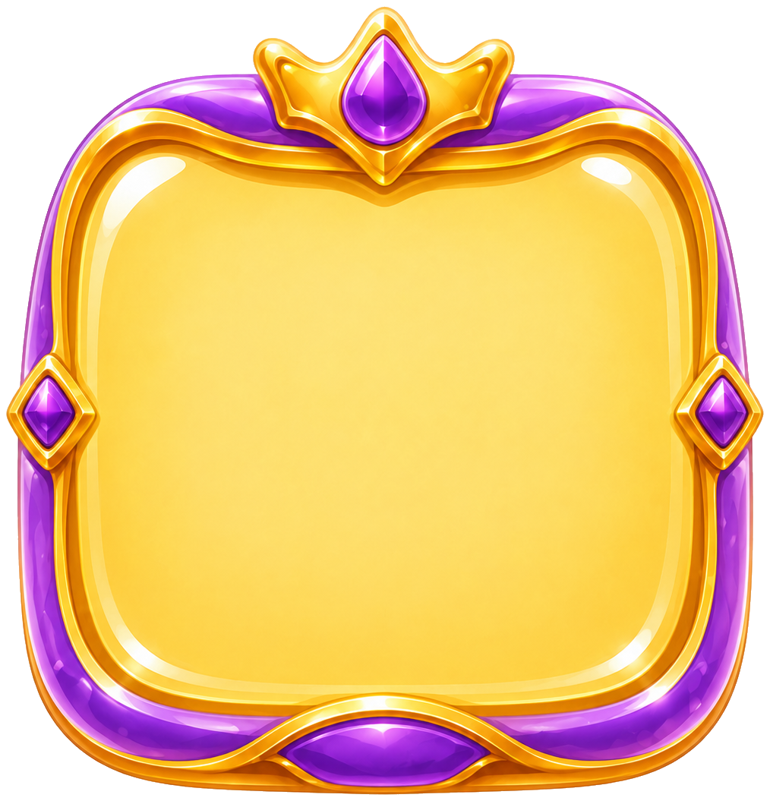
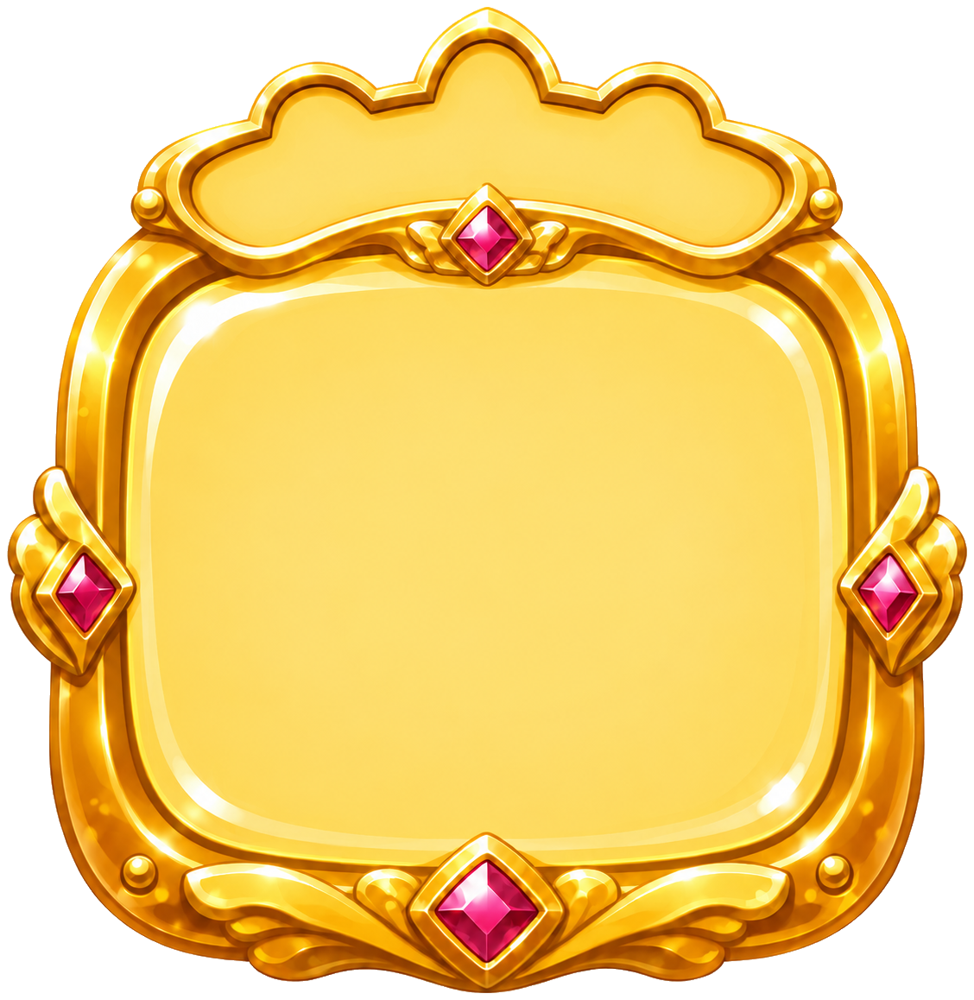
Node cổng boss thay cho ô màn thường ở cuối mỗi thế giới (màn 10, 20, 30…). Trạng thái: locked ổ khoá bạc → current khung tím-vàng amethyst đang chờ đánh → cleared khung vàng ruby sau khi hạ boss. Đặt số màn / ngôi sao chồng lên vùng sáng giữa khung.
SVG vector — nhúng thẳng vào game (Android: dùng làm Drawable/asset, hoặc convert sang VectorDrawable). 1 file co giãn mọi mật độ (mdpi→xxxhdpi) không vỡ. Icon stroke mặc định #5B4636 — đổi stroke để recolor.